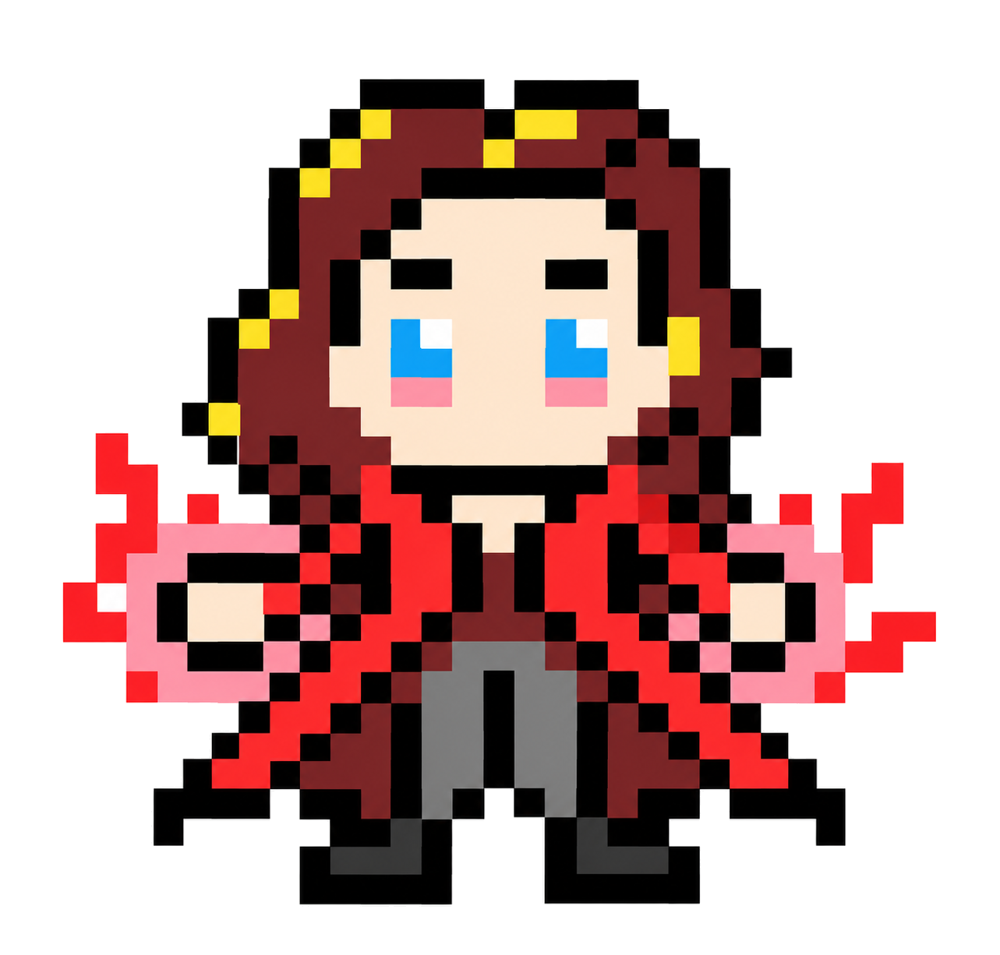

<!DOCTYPE html>
<html lang="en">
<head>
  <meta charset="UTF-8">
  <meta name="viewport" content="width=device-width, initial-scale=1.0">
  <title>SETS & DISJOINT-SET UNION (DSU) // [✧] SCARLET WITCH — ALGO-VENGERS</title>
  
  <meta name="description" content="Design & Analysis of Algorithms: SETS & DISJOINT-SET UNION (DSU). Mission 02: DATA STRUCTURES.">
  <meta name="theme-color" content="#f8fafc">

  <!-- Google Fonts -->
  <link rel="preconnect" href="https://fonts.googleapis.com">
  <link rel="preconnect" href="https://fonts.gstatic.com" crossorigin>
  <link href="https://fonts.googleapis.com/css2?family=Chakra+Petch:wght@500;700&family=Plus+Jakarta+Sans:wght@400;500;600;700&family=Press+Start+2P&family=Silkscreen:wght@400;700&family=JetBrains+Mono:wght@400;600&display=swap" rel="stylesheet">

  <!-- KaTeX for beautiful math formulas -->
  <link rel="stylesheet" href="https://cdn.jsdelivr.net/npm/katex@0.16.9/dist/katex.min.css">
  <script defer src="https://cdn.jsdelivr.net/npm/katex@0.16.9/dist/katex.min.js"></script>
  <script defer src="https://cdn.jsdelivr.net/npm/katex@0.16.9/dist/contrib/auto-render.min.js"></script>

  <style>
    :root {
      --bg-main: #f8fafc;
      --border-dark: #0f172a;
      --text-main: #0f172a;
      --text-muted: #475569;
      --color-gold: #d97706;
      --color-cyan: #0284c7;
      --hero-accent: #e11d48;
      --badge-bg: #ffe4e6;

      --font-pixel: 'Press Start 2P', monospace;
      --font-pixel-sub: 'Silkscreen', monospace;
      --font-body: 'Plus Jakarta Sans', system-ui, sans-serif;
      --font-code: 'JetBrains Mono', monospace;
      --top-bar-height: 32px;
      --nav-height: 72px;
      --container-max: 1100px;
    }

    *, *::before, *::after { box-sizing: border-box; margin: 0; padding: 0; }
    
    /* Pixelated retro mouse pointer */
    html, body {
      scroll-behavior: smooth;
      font-size: 16px;
      background-color: var(--bg-main);
      color: var(--text-main);
      font-family: var(--font-body);
      cursor: url("data:image/svg+xml,%3Csvg%20xmlns%3D%22http%3A//www.w3.org/2000/svg%22%20width%3D%2224%22%20height%3D%2224%22%20viewBox%3D%220%200%2024%2024%22%20shape-rendering%3D%22crispEdges%22%3E%20%3Cpath%20fill%3D%22%230f172a%22%20stroke%3D%22%23ffffff%22%20stroke-width%3D%221.5%22%20d%3D%22M2%202v18l5-5%204%208%203-1.5-4-8h6L2%202z%22/%3E%20%3C/svg%3E") 0 0, auto !important;
    }
    
    body {
      overflow-x: hidden;
      min-height: 100vh;
      line-height: 1.6;
      display: flex;
      flex-direction: column;
      background-color: var(--bg-main);
    }

    /* Native CSS Circular Hero Emblem Cursor on all interactive elements (ZERO TRAILING) */
    a, button, .pixel-btn, .topic-card, .mission-card, input, select, label, .top-progress-track-wrapper, .hero-speech-bubble, [role="button"], [data-hero-cursor], .quiz-opt-btn {
      cursor: url("data:image/svg+xml,%3Csvg%20xmlns%3D%22http%3A//www.w3.org/2000/svg%22%20width%3D%2232%22%20height%3D%2232%22%20viewBox%3D%220%200%2032%2032%22%20shape-rendering%3D%22crispEdges%22%3E%20%3Ccircle%20cx%3D%2216%22%20cy%3D%2216%22%20r%3D%2214%22%20fill%3D%22%23e11d48%22%20stroke%3D%22%23831843%22%20stroke-width%3D%222%22/%3E%20%3Cpath%20d%3D%22M16%206%20L18%2013%20L25%2015%20L19%2018%20L20%2025%20L16%2020%20L12%2025%20L13%2018%20L7%2015%20L14%2013%20Z%22%20fill%3D%22%23fda4af%22%20stroke%3D%22%23000%22%20stroke-width%3D%221%22/%3E%20%3Ccircle%20cx%3D%2216%22%20cy%3D%2216%22%20r%3D%222.5%22%20fill%3D%22%23ffffff%22/%3E%20%3C/svg%3E") 16 16, pointer !important;
    }

    .cyber-grid-bg {
      position: fixed; top: 0; left: 0; width: 100%; height: 100%;
      background-image: linear-gradient(to right, rgba(15, 23, 42, 0.05) 1px, transparent 1px), linear-gradient(to bottom, rgba(15, 23, 42, 0.05) 1px, transparent 1px);
      background-size: 32px 32px; pointer-events: none; z-index: 0;
    }
    .container { max-width: var(--container-max); margin: 0 auto; padding: 0 24px; position: relative; z-index: 2; }
    .pixel-heading { font-family: var(--font-pixel); letter-spacing: 1px; text-transform: uppercase; }

    /* Pixel Buttons */
    .pixel-btn {
      display: inline-flex; align-items: center; justify-content: center; gap: 8px;
      padding: 10px 18px; font-family: var(--font-pixel); font-size: 0.65rem;
      text-decoration: none; text-transform: uppercase; border: 3px solid var(--border-dark);
      position: relative; user-select: none;
      transition: transform 0.1s ease, box-shadow 0.1s ease;
      box-shadow: -3px 0 0 0 var(--border-dark), 3px 0 0 0 var(--border-dark), 0 -3px 0 0 var(--border-dark), 0 3px 0 0 var(--border-dark), 0 4px 0 0 var(--border-dark);
    }
    .pixel-btn:hover { transform: translateY(-2px); box-shadow: -3px 0 0 0 var(--border-dark), 3px 0 0 0 var(--border-dark), 0 -3px 0 0 var(--border-dark), 0 3px 0 0 var(--border-dark), 0 6px 0 0 var(--border-dark); }
    .pixel-btn:active { transform: translateY(2px); box-shadow: -3px 0 0 0 var(--border-dark), 3px 0 0 0 var(--border-dark), 0 -3px 0 0 var(--border-dark), 0 3px 0 0 var(--border-dark), 0 2px 0 0 var(--border-dark); }
    .pixel-btn-primary { background: #facc15; color: #0f172a; font-weight: bold; }
    .pixel-btn-secondary { background: #ffffff; color: var(--color-cyan); }
    .pixel-btn-accent { background: var(--hero-accent); color: #ffffff; }

    /* Sticky Navbar */
    .pixel-navbar {
      position: fixed; top: var(--top-bar-height); left: 0; width: 100%; height: var(--nav-height);
      background: rgba(255, 255, 255, 0.96); backdrop-filter: blur(10px);
      border-bottom: 3px solid var(--border-dark); z-index: 1000; display: flex; align-items: center;
    }
    .nav-container { display: flex; align-items: center; justify-content: space-between; width: 100%; max-width: var(--container-max); margin: 0 auto; padding: 0 24px; }
    .nav-brand { display: flex; align-items: center; gap: 12px; text-decoration: none; }
    .brand-icon { width: 36px; height: 36px; background: #facc15; border: 2px solid var(--border-dark); display: flex; align-items: center; justify-content: center; }
    .brand-icon svg { width: 22px; height: 22px; fill: var(--border-dark); }
    .brand-text { font-family: var(--font-pixel); font-size: 1.05rem; color: var(--border-dark); }
    .brand-text span { color: #dc2626; }
    .breadcrumbs { font-family: var(--font-pixel); font-size: 0.6rem; color: var(--text-muted); display: flex; align-items: center; gap: 6px; }
    .breadcrumbs a { color: var(--color-cyan); text-decoration: none; }

    /* Persistent Top Reading Progress Bar */
    #global-top-progress {
      position: fixed; top: 0; left: 0; width: 100%; height: var(--top-bar-height);
      background: #0f172a; border-bottom: 2px solid #000; z-index: 10002;
      display: flex; align-items: center; justify-content: space-between; padding: 0 16px;
      box-shadow: 0 2px 8px rgba(0,0,0,0.4);
    }
    .top-progress-hero-badge {
      display: flex; align-items: center; gap: 8px; flex-shrink: 0;
    }
    .top-hero-symbol-box {
      width: 22px; height: 22px; background: #ffe4e6; color: #e11d48;
      border: 1.5px solid #e11d48; font-family: var(--font-pixel); font-size: 0.75rem;
      display: flex; align-items: center; justify-content: center; border-radius: 2px;
    }
    .top-hero-title {
      font-family: var(--font-pixel); font-size: 0.58rem; color: #f8fafc; letter-spacing: 0.5px;
    }
    .top-progress-track-wrapper {
      flex: 1; max-width: 650px; margin: 0 20px; height: 10px; background: #1e293b;
      border: 1.5px solid #475569; border-radius: 999px; position: relative; cursor: pointer;
    }
    .top-progress-fill-bar {
      height: 100%; width: 0%; background: linear-gradient(90deg, #e11d48, #f43f5e, #fda4af); border-radius: 999px;
      transition: width 0.08s ease-out;
    }
    .top-progress-slider-marker {
      position: absolute; top: 50%; left: 0%; transform: translate(-50%, -50%);
      width: 22px; height: 22px; background: #0f172a; border: 2px solid #e11d48;
      border-radius: 50%; display: flex; align-items: center; justify-content: center;
      font-family: var(--font-pixel); font-size: 0.65rem; color: #e11d48;
      box-shadow: 0 0 10px #e11d48; pointer-events: none; transition: left 0.08s ease-out;
    }
    .top-progress-percent-readout {
      font-family: var(--font-pixel); font-size: 0.65rem; color: #facc15; min-width: 50px; text-align: right; flex-shrink: 0;
    }

    /* Main Container */
    main { flex: 1; padding-top: calc(var(--nav-height) + var(--top-bar-height) + 24px); padding-bottom: 60px; }

    /* Topic Hero Section */
    .topic-hero {
      background: #ffffff; border: 3px solid var(--border-dark);
      box-shadow: 0 6px 0 var(--border-dark); padding: 32px;
      margin-bottom: 32px; display: grid; grid-template-columns: auto 1fr; gap: 28px; align-items: center;
    }
    .hero-sprite-frame {
      width: 120px; height: 130px; background: var(--badge-bg);
      border: 3px solid var(--border-dark); display: flex; align-items: center; justify-content: center;
      position: relative; box-shadow: 0 4px 0 var(--border-dark); overflow: hidden;
    }
    .hero-avatar-img {
      max-width: 100px; max-height: 112px; width: auto; height: auto;
      object-fit: contain; image-rendering: pixelated;
      filter: drop-shadow(0 4px 8px rgba(0,0,0,0.25)); transition: transform 0.2s cubic-bezier(0.175, 0.885, 0.32, 1.275);
    }
    .topic-hero:hover .hero-avatar-img { transform: scale(1.1) translateY(-3px); }

    .hero-meta-tag {
      display: inline-block; font-family: var(--font-pixel); font-size: 0.6rem;
      background: #ffffff; border: 2px solid var(--border-dark); padding: 3px 10px;
      margin-bottom: 10px; font-weight: bold; color: var(--hero-accent); box-shadow: 0 2px 0 var(--border-dark);
    }
    .hero-title { font-size: 1.6rem; margin-bottom: 12px; line-height: 1.3; color: var(--border-dark); }
    .hero-tagline { font-family: var(--font-code); font-size: 0.95rem; color: var(--text-muted); margin-bottom: 14px; font-weight: 600; }
    .hero-quote-box {
      background: #f1f5f9; border-left: 4px solid var(--hero-accent);
      padding: 10px 14px; font-style: italic; color: #1e293b; font-size: 0.88rem;
    }

    /* Content Cards */
    .content-card {
      background: #ffffff; border: 3px solid var(--border-dark);
      box-shadow: 0 5px 0 var(--border-dark); padding: 28px; margin-bottom: 28px;
    }
    .card-heading {
      display: flex; justify-content: space-between; align-items: center;
      font-family: var(--font-pixel); font-size: 0.85rem; color: var(--border-dark);
      margin-bottom: 18px; border-bottom: 2px solid #e2e8f0; padding-bottom: 10px;
    }
    .card-desc-text { font-size: 0.95rem; color: #1e293b; line-height: 1.7; margin-bottom: 16px; }
    
    .math-callout {
      background: #f1f5f9; border: 2px solid var(--border-dark); padding: 16px 20px;
      font-size: 0.95rem; margin-bottom: 16px; color: #0f172a;
      box-shadow: 0 3px 0 var(--border-dark); overflow-x: auto;
    }

    /* Table */
    .algo-table { width: 100%; border-collapse: collapse; margin-top: 10px; font-size: 0.9rem; }
    .algo-table th, .algo-table td { border: 2px solid var(--border-dark); padding: 12px 14px; text-align: left; }
    .algo-table th { background: #f8fafc; font-family: var(--font-pixel); font-size: 0.65rem; color: var(--border-dark); }
    .complexity-badge {
      display: inline-block; font-family: var(--font-code); font-weight: bold;
      background: var(--badge-bg); color: var(--hero-accent); border: 1px solid var(--hero-accent);
      padding: 3px 8px; border-radius: 4px; font-size: 0.85rem;
    }

    /* Code Block */
    .code-box {
      background: #0f172a; color: #f8fafc; border: 3px solid var(--border-dark);
      padding: 20px; font-family: var(--font-code); font-size: 0.85rem; line-height: 1.6;
      overflow-x: auto; position: relative; box-shadow: 0 5px 0 var(--border-dark);
    }
    .code-header {
      display: flex; justify-content: space-between; align-items: center;
      margin-bottom: 10px; font-family: var(--font-pixel); font-size: 0.65rem; color: #94a3b8;
    }

    /* Interactive Visualizer Canvas */
    .viz-container {
      background: #f8fafc; border: 2px dashed var(--border-dark); padding: 20px;
      border-radius: 4px; display: flex; flex-direction: column; align-items: center; gap: 16px;
    }

    /* Speech Bubble */
    .hero-speech-bubble { transition: transform 0.15s ease; }
    .hero-speech-bubble:hover { transform: translateY(-2px); }

    /* Bottom Actions */
    .bottom-section {
      text-align: center; margin-top: 30px; display: flex; flex-direction: column;
      align-items: center; gap: 16px;
    }
    .pixel-divider { width: 180px; height: 4px; background: repeating-linear-gradient(to right, var(--border-dark) 0px, var(--border-dark) 8px, transparent 8px, transparent 16px); }
  </style>
</head>
<body>

  <div class="cyber-grid-bg"></div>

  <!-- Persistent Top Reading Progress Bar -->
  <div id="global-top-progress">
    <div class="top-progress-hero-badge">
      <div class="top-hero-symbol-box">[✧]</div>
      <div class="top-hero-title">SCARLET WITCH // Chaos Hex Spark</div>
    </div>
    <div class="top-progress-track-wrapper" id="global-progress-track" title="Click anywhere along the bar to jump in the dossier">
      <div class="top-progress-fill-bar" id="global-progress-fill"></div>
      <div class="top-progress-slider-marker" id="global-progress-marker">✧</div>
    </div>
    <div class="top-progress-percent-readout" id="global-progress-pct">0%</div>
  </div>

  <!-- Sticky Navbar -->
  <header class="pixel-navbar">
    <div class="nav-container">
      <a href="index.html" class="nav-brand">
        <div class="brand-icon"><svg viewBox="0 0 24 24"><polygon points="12,2 8,20 11,20 12,14 16,14 17,20 20,20 15,2"/><polygon points="12,6 10,12 14,12" fill="#facc15"/></svg></div>
        <div class="brand-text">ALGO-<span>VENGERS</span></div>
      </a>

      <div class="breadcrumbs">
        <a href="index.html">HQ</a> <span>▶</span>
        <a href="missions.html">MISSIONS</a> <span>▶</span>
        <a href="mission-02.html">MISSION 02</a> <span>▶</span>
        <span style="color: var(--border-dark); font-weight: bold;">TOPIC 05</span>
      </div>

      <div>
        <a href="mission-02.html" class="pixel-btn pixel-btn-secondary" style="padding: 6px 12px; font-size: 0.6rem;">← MISSION HUB</a>
      </div>
    </div>
  </header>

  <main>
    <div class="container">

      <!-- Topic Hero Section -->
      <section class="topic-hero">
        <div class="hero-sprite-frame">
          
        </div>
        <div>
          <span class="hero-meta-tag">MISSION 02 // [✧] SCARLET WITCH</span>
          <h1 class="hero-title pixel-heading">SETS & DISJOINT-SET UNION (DSU)</h1>
          <div class="hero-tagline">HEX DISJOINT PARTITION MAGIC // Disjoint-Set Realities & Path Compression</div>
          <div class="hero-quote-box">"Reality divides into disjoint realms. With chaos magic, we fuse universes and find root realities in near-constant time."</div>
        </div>
      </section>

      <!-- 01. S.H.I.E.L.D. Mission Briefing & Marvel Story -->
      <section class="content-card" style="border-left: 6px solid #e11d48;">
        <h2 class="card-heading">
          <span>01. S.H.I.E.L.D. MISSION BRIEFING // OP-WANDA-08</span>
          <span style="font-size: 0.6rem; color: var(--hero-accent);">MULTIVERSE NEXUS REALM PARTITION</span>
        </h2>
        <div class="card-desc-text" style="font-size: 1.02rem; font-weight: 500; color: #0f172a; margin-bottom: 12px;">
          The Darkhold has shattered reality into isolated timeline pockets across the multiverse. Wanda Maximoff must monitor which alternate realities are connected and merge them into unified nexus realms without creating paradox cycles.
        </div>
        <div style="background: #f1f5f9; border: 2px dashed #475569; padding: 12px 16px; margin-bottom: 10px;">
          <div style="font-family: var(--font-pixel); font-size: 0.6rem; color: #dc2626; margin-bottom: 4px;">CRITICAL CRISIS:</div>
          <div style="font-size: 0.9rem; color: #334155;">Testing whether two dimensions are already connected using naive graph searches takes O(V + E) time per query. Unifying large timelines causes tall tree chains that degrade to O(N).</div>
        </div>
        <div style="background: #ecfdf5; border: 2px solid #10b981; padding: 12px 16px;">
          <div style="font-family: var(--font-pixel); font-size: 0.6rem; color: #059669; margin-bottom: 4px;">TACTICAL OBJECTIVE:</div>
          <div style="font-size: 0.9rem; color: #065f46;">Help Scarlet Witch find root nexus representatives and union timelines without forming temporal paradox loops.</div>
        </div>
      </section>

      <!-- 02. Formal Specification & Problem Invariants -->
      <section class="content-card">
        <h2 class="card-heading">
          <span>02. FORMAL PROBLEM SPECIFICATION & INVARIANTS</span>
          <span style="font-size: 0.6rem; color: var(--hero-accent);">ACADEMIC CURRICULUM</span>
        </h2>
        <div class="card-desc-text">
<p>A <strong>Disjoint-Set Data Structure</strong> (also termed <strong>Union-Find</strong> or <strong>DSU</strong>) maintains a collection of disjoint (non-overlapping) dynamic sets of elements \(\mathcal{S} = \{S_1, S_2, \dots, S_k\}\), where each set is identified by a unique <strong>Representative</strong> element (the root of the set tree).</p>
<p>Core DSU Primitive Operations:</p>
<ul>
  <li><code>make_set(x)</code>: Initializes a singleton set containing element \(x\) where \(x\) is its own parent and representative.</li>
  <li><code>find(x)</code>: Traverses parent pointers to return the unique representative (root) of the set containing element \(x\). Allows testing if elements belong to the same set: <code>find(u) == find(v)</code>.</li>
  <li><code>union(x, y)</code>: Merges the set containing \(x\) with the set containing \(y\). If both elements already share the same representative, union does nothing (or flags a cycle).</li>
</ul>
<p><strong>Two Vital Heuristic Optimizations:</strong></p>
<ol>
  <li><strong>Union by Rank / Size:</strong> Always attaches the root of the shallower (or smaller) tree to the root of the deeper tree, preventing deep unbalanced tree chains and bounding tree height to \(O(\log n)\).</li>
  <li><strong>Path Compression:</strong> During any <code>find(x)</code> query, flattens the tree structure by making every node on the traversal path point directly to the root, achieving the nearly-constant Inverse Ackermann bound \(lpha(n)\).</li>
</ol>
</div>
      </section>

      <!-- Speech Bubble Callout 1 -->
      
    <div class="hero-speech-bubble" style="display: flex; align-items: flex-start; gap: 16px; background: #ffffff; border: 3px solid #0f172a; box-shadow: 0 4px 0 #0f172a; padding: 16px; margin: 24px 0;">
      <div style="width: 58px; height: 62px; background: #ffe4e6; border: 2px solid #0f172a; display: flex; align-items: center; justify-content: center; flex-shrink: 0; box-shadow: 0 2px 4px rgba(0,0,0,0.2);">
        
      </div>
      <div style="position: relative; flex: 1;">
        <div style="font-family: var(--font-pixel); font-size: 0.62rem; color: #e11d48; margin-bottom: 4px;">
          [✧] COMM-LINK // Scarlet Witch
        </div>
        <div style="font-size: 0.92rem; color: #1e293b; line-height: 1.6;">
          "Reality is shaped by boundaries. When two alternate timelines must unite, chaos magic bonds them by rank to keep the multiverse tree shallow!"
        </div>
      </div>
    </div>
    

      <!-- 03. Naive Approach vs Optimal Formulation -->
      <section class="content-card">
        <h2 class="card-heading">
          <span>03. BRUTE FORCE VS ALGORITHMIC OPTIMALITY</span>
          <span style="font-size: 0.6rem; color: var(--color-gold);">STRATEGIC COMPARISON</span>
        </h2>
        <div class="card-desc-text">
<p>A naive DSU implementation simply links parents arbitrarily (<code>parent[root_x] = root_y</code>). On adversarial inputs (e.g., repeatedly calling union on consecutive elements), the trees degenerate into a tall linear vine of height \(n\), causing <code>find</code> operations to take \(O(n)\) time. Combining Union by Rank with Path Compression crushes the amortized cost per operation to \(\Theta(lpha(n)) \le 4\) for any universe size conceivable.</p>
<div style="display:grid; grid-template-columns: 1fr 1fr; gap:16px; margin-top:12px;">
  <div style="background:#fee2e2; border:2px solid #ef4444; padding:12px; font-size:0.85rem;">
    <strong style="color:#b91c1c;">NAIVE UNION-FIND</strong><br>
    Arbitrary parent pointer updates.<br>
    Tree Height: Up to \(O(n)\)<br>
    Find Time: \(O(n)\)<br>
    Catastrophic slowdown when running Kruskal's MST algorithm.
  </div>
  <div style="background:#dcfce7; border:2px solid #16a34a; padding:12px; font-size:0.85rem;">
    <strong style="color:#15803d;">DSU WITH RANK + PATH COMPRESSION</strong><br>
    Dynamic path flattening during traversal.<br>
    Amortized Time: \(\Theta(lpha(n))\)<br>
    Inverse Ackermann \(lpha(n) \le 4\) for \(n = 10^{80}\) (particles in observable universe!).
  </div>
</div>
</div>
        <div style="background: #eff6ff; border-left: 4px solid #2563eb; padding: 12px 16px; margin-top: 12px;">
          <div style="font-family: var(--font-pixel); font-size: 0.6rem; color: #1d4ed8; margin-bottom: 4px;">WHY THIS ALGORITHM WINS:</div>
          <div style="font-size: 0.9rem; color: #1e3a8a;">Disjoint-Set Union (Union-Find) with Union by Rank and Path Compression flattens component trees during every Find query, driving amortized time down to near-constant O(alpha(N)).</div>
        </div>
      </section>

      <!-- 04. Mathematical Formulation & Recurrence Derivation -->
      <section class="content-card">
        <h2 class="card-heading">
          <span>04. MATHEMATICAL PROOFS & RECURRENCES</span>
          <span style="font-size: 0.6rem; color: #2563eb;">KATEX FORMULATION</span>
        </h2>
        <div class="math-callout">
<p><strong>The Tarjan Bound:</strong> For a sequence of \(m\) operations on \(n\) elements:</p>
\[ T(m, n) = \Theta(m \cdot \alpha(n)) \]
<p>Where \(\alpha(n)\) is the <strong>Inverse Ackermann Function</strong>. The standard Ackermann function \(A(i, j)\) grows with astronomical speed:</p>
\[ A(1, n) = 2n, \quad A(2, n) = 2^n, \quad A(3, n) = 2^{2^{\cdot^{\cdot^2}}} (n \text{ towers of 2}), \quad A(4, 2) = 2^{65536} \]
<p>Since \(A(4, 2)\) exceeds the estimated total number of atoms in the entire observable universe (\(\sim 10^{80}\)), \(\alpha(n) \le 4\) for all practical inputs \(n\). In algorithmic practice, DSU operations run in effective \(O(1)\) constant time!</p>
</div>
      </section>

      <!-- Speech Bubble Callout 2 -->
      
    <div class="hero-speech-bubble" style="display: flex; align-items: flex-start; gap: 16px; background: #ffffff; border: 3px solid #0f172a; box-shadow: 0 4px 0 #0f172a; padding: 16px; margin: 24px 0;">
      <div style="width: 58px; height: 62px; background: #ffe4e6; border: 2px solid #0f172a; display: flex; align-items: center; justify-content: center; flex-shrink: 0; box-shadow: 0 2px 4px rgba(0,0,0,0.2);">
        
      </div>
      <div style="position: relative; flex: 1;">
        <div style="font-family: var(--font-pixel); font-size: 0.62rem; color: #e11d48; margin-bottom: 4px;">
          [✧] TACTICAL ADVICE // Scarlet Witch
        </div>
        <div style="font-size: 0.92rem; color: #1e293b; line-height: 1.6;">
          "Path compression is the ultimate spell: the instant you trace a path to the root reality, all intermediate universes collapse directly to the nexus. Alpha(n) is practically constant!"
        </div>
      </div>
    </div>
    

      <!-- 05. Concrete Worked Numerical Example -->
      <section class="content-card">
        <h2 class="card-heading">
          <span>05. STEP-BY-STEP WORKED CALCULATION EXAMPLE</span>
          <span style="font-size: 0.6rem; color: #16a34a;">NUMERICAL TRACE</span>
        </h2>
        <div class="card-desc-text">
<p><strong>Worked Example:</strong> Execute DSU operations on elements \(\{1, 2, 3, 4, 5\}\) using Union by Rank and Path Compression.</p>
<ol style="margin-left:20px; line-height:1.8;">
  <li><strong>Initial:</strong> <code>parent = [0, 1, 2, 3, 4, 5], rank = [0, 0, 0, 0, 0, 0]</code>. Five isolated components.</li>
  <li><strong>Union(1, 2):</strong> <code>find(1) = 1, find(2) = 2</code>. Ranks equal (0). Make 1 parent of 2: <code>parent[2] = 1, rank[1] = 1</code>.</li>
  <li><strong>Union(3, 4):</strong> <code>find(3) = 3, find(4) = 4</code>. Make 3 parent of 4: <code>parent[4] = 3, rank[3] = 1</code>.</li>
  <li><strong>Union(2, 4):</strong>
      <br>Find(2): Follows <code>parent[2] = 1</code> \(\implies\) root = 1.
      <br>Find(4): Follows <code>parent[4] = 3</code> \(\implies\) root = 3.
      <br>Roots differ! <code>rank[1] = 1, rank[3] = 1</code>. Make 1 parent of 3: <code>parent[3] = 1, rank[1] = 2</code>.
      <br>Set {1, 2, 3, 4} now merged under root 1.
  </li>
  <li><strong>Find(4) with Path Compression:</strong> Traverses \(4 	o 3 	o 1\). Compresses pointer: <code>parent[4] = 1</code> directly! Subsequent <code>find(4)</code> takes exactly 1 step!</li>
</ol>
</div>
      </section>

      <!-- 06. Interactive Physical Tactical Simulation Arena -->
      <section class="content-card">
        <h2 class="card-heading">
          <span>06. RETRO PHYSICAL GAME SIMULATION & YOUR CUSTOM INPUTS</span>
          <span style="font-size: 0.6rem; color: var(--color-cyan);">LIVE SIMULATION CONSOLE</span>
        </h2>
        <div class="viz-container">
          <div class="sim-tactical-header" style="display: flex; align-items: center; justify-content: space-between; width: 100%; margin-bottom: 16px; padding: 12px 18px; background: #0f172a; border: 3px solid var(--border-dark); color: #f8fafc; box-shadow: 0 4px 0 var(--border-dark);">
            <div style="display: flex; align-items: center; gap: 14px;">
              <div style="width: 52px; height: 56px; background: #ffe4e6; border: 2px solid #ffffff; display: flex; align-items: center; justify-content: center; overflow: hidden; box-shadow: 0 2px 4px rgba(0,0,0,0.4);">
                
              </div>
              <div>
                <div style="font-family: var(--font-pixel); font-size: 0.7rem; color: #facc15;">OPERATOR: [✧] SCARLET WITCH</div>
                <div style="font-family: var(--font-pixel-sub); font-size: 0.8rem; color: #94a3b8;">TACTICAL DAA PHYSICAL SIMULATION ENGINE</div>
              </div>
            </div>
            <div style="font-family: var(--font-pixel); font-size: 0.6rem; background: #1e293b; color: #22c55e; padding: 6px 12px; border: 1px solid #475569;">
              STATUS: READY
            </div>
          </div>
          
<div class="sim-game-wrapper" style="width: 100%; text-align: left;">
  <div style="display: flex; justify-content: space-between; align-items: center; margin-bottom: 12px; border-bottom: 2px solid #334155; padding-bottom: 8px;">
    <div>
      <span style="font-family: var(--font-pixel); font-size: 0.75rem; color: #e11d48;">MISSION: MULTIVERSE NEXUS PARTITION (DSU)</span>
      <p style="font-size: 0.82rem; color: #64748b; margin-top: 2px;">Find root universes and union disjoint components in O(α(N)) near-constant time.</p>
    </div>
    <div style="font-family: var(--font-pixel); font-size: 0.65rem; background: #1e293b; color: #facc15; padding: 6px 10px; border: 1px solid #475569;">
      COMPONENTS: <span id="wanda-comp-count" style="color: #38bdf8;">4</span>
    </div>
  </div>

  <div style="background: #f1f5f9; border: 2px solid #0f172a; padding: 10px 14px; margin-bottom: 14px; display: flex; flex-wrap: wrap; align-items: center; justify-content: space-between; gap: 10px;">
    <div style="display: flex; align-items: center; gap: 10px;">
      <label style="font-family: var(--font-pixel); font-size: 0.62rem; color: #0f172a;">UNION (U, V):</label>
      <input type="number" id="wanda-u" value="1" min="0" max="4" style="width: 45px; padding: 4px; font-family: var(--font-code); font-weight: bold; border: 2px solid #0f172a; text-align: center;">
      <span>⟷</span>
      <input type="number" id="wanda-v" value="3" min="0" max="4" style="width: 45px; padding: 4px; font-family: var(--font-code); font-weight: bold; border: 2px solid #0f172a; text-align: center;">
    </div>
    <div style="font-family: var(--font-code); font-size: 0.8rem; font-weight: bold; color: #e11d48;">
      HEURISTICS: UNION BY RANK + PATH COMPRESSION
    </div>
  </div>

  <div style="background: #090d16; border: 3px solid #0f172a; padding: 18px; border-radius: 6px; box-shadow: inset 0 0 16px rgba(0,0,0,0.9); margin-bottom: 14px; position: relative; min-height: 220px;">
    <div id="wanda-actor" style="position: absolute; top: 15px; left: 30px; transition: all 0.4s cubic-bezier(0.34, 1.56, 0.64, 1); z-index: 20; display: flex; flex-direction: column; align-items: center;">
      <div style="font-family: var(--font-pixel); font-size: 0.5rem; background: #e11d48; color: #fff; padding: 1px 4px; border-radius: 2px; margin-bottom: 2px;">✧ WANDA</div>
      
    </div>

    <!-- 5 Nodes Representation -->
    <div id="wanda-nodes-grid" style="display: flex; gap: 16px; justify-content: center; margin-top: 85px;">
      <!-- Populated via JS -->
    </div>
  </div>

  <div style="background: #ffffff; border: 2px solid #0f172a; padding: 12px 16px; margin-bottom: 14px; min-height: 52px; display: flex; align-items: center;" id="wanda-dialogue">
    💬 <strong>Scarlet Witch:</strong> "5 timeline realities initialized. Select two nodes to merge into a common nexus."
  </div>

  <div class="viz-controls" style="display: flex; gap: 10px; flex-wrap: wrap;">
    <button class="pixel-btn pixel-btn-primary" id="wanda-btn-union">✧ UNION(U, V)</button>
    <button class="pixel-btn pixel-btn-secondary" id="wanda-btn-find">🔍 FIND ROOT</button>
    <button class="pixel-btn pixel-btn-secondary" id="wanda-btn-reset">↺ RESET REALITIES</button>
  </div>
</div>

        </div>
      </section>

      <!-- 07. Asymptotic Derivation & Complexity Matrix -->
      <section class="content-card">
        <h2 class="card-heading">
          <span>07. ASYMPTOTIC COMPLEXITY DERIVATION MATRIX</span>
          <span style="font-size: 0.6rem; color: var(--hero-accent);">DAA BIG-O BOUNDS</span>
        </h2>
        <table class="algo-table">
          <thead>
            <tr>
              <th>OPERATION / CASE</th>
              <th>ASYMPTOTIC BOUND</th>
              <th>SPACE / FOOTPRINT</th>
              <th>MATHEMATICAL INVARIANT</th>
            </tr>
          </thead>
          <tbody>
            
        <tr>
          <td style="font-weight: 600; color: #0f172a;">MakeSet(x)</td>
          <td><span class="complexity-badge">O(1)</span></td>
          <td style="font-family: var(--font-code); color: #e11d48; font-weight: 600;">O(1)</td>
          <td style="color: #475569;">Allocates single parent and rank cell</td>
        </tr>
        <tr>
          <td style="font-weight: 600; color: #0f172a;">Find(x) (Naive)</td>
          <td><span class="complexity-badge">O(n)</span></td>
          <td style="font-family: var(--font-code); color: #e11d48; font-weight: 600;">Omega(1)</td>
          <td style="color: #475569;">Can degrade to chain without optimizations</td>
        </tr>
        <tr>
          <td style="font-weight: 600; color: #0f172a;">Find(x) (Rank + Path Compression)</td>
          <td><span class="complexity-badge">O(alpha(n))</span></td>
          <td style="font-family: var(--font-code); color: #e11d48; font-weight: 600;">Omega(1)</td>
          <td style="color: #475569;">Nearly constant inverse Ackermann amortized bound</td>
        </tr>
        <tr>
          <td style="font-weight: 600; color: #0f172a;">Union(x, y)</td>
          <td><span class="complexity-badge">O(alpha(n))</span></td>
          <td style="font-family: var(--font-code); color: #e11d48; font-weight: 600;">Omega(1)</td>
          <td style="color: #475569;">Dominated by two find root queries</td>
        </tr>
        <tr>
          <td style="font-weight: 600; color: #0f172a;">Connected Components Check</td>
          <td><span class="complexity-badge">O(alpha(n))</span></td>
          <td style="font-family: var(--font-code); color: #e11d48; font-weight: 600;">Omega(1)</td>
          <td style="color: #475569;">Direct comparison find(u) == find(v)</td>
        </tr>
          </tbody>
        </table>
      </section>

      <!-- 08. Interactive Asymptotic Growth Comparison Slider -->
      <section class="content-card">
        <h2 class="card-heading">
          <span>08. ASYMPTOTIC GROWTH COMPARISON</span>
          <span style="font-size: 0.6rem; color: var(--color-gold);">LIVE CALCULATOR</span>
        </h2>
        <div style="margin-bottom: 16px;">
          <p class="card-desc-text">Drag the input size slider \(n\) to observe step counts diverge across complexity classes in real-time:</p>
          <div style="background: #f1f5f9; border: 2px solid #0f172a; padding: 14px; margin-bottom: 14px; display: flex; align-items: center; justify-content: space-between; gap: 14px; flex-wrap: wrap;">
            <div style="display: flex; align-items: center; gap: 12px;">
              <label style="font-family: var(--font-pixel); font-size: 0.68rem; color: #0f172a;">INPUT SIZE (N):</label>
              <input type="range" id="growth-slider" min="1" max="10" value="4" style="width: 160px; accent-color: #e11d48;">
              <span id="growth-n-val" style="font-family: var(--font-code); font-weight: bold; background: #0f172a; color: #facc15; padding: 4px 10px; border-radius: 4px;">n = 16</span>
            </div>
            <div style="font-size: 0.8rem; color: #475569;">
              Compare: \(O(1), O(\log n), O(n), O(n \log n), O(n^2), O(2^n)\)
            </div>
          </div>
          
          <div id="growth-bars-container" style="display: flex; flex-direction: column; gap: 10px; background: #ffffff; border: 2px solid #0f172a; padding: 16px;">
            <!-- Dynamically populated via JS -->
          </div>
        </div>
      </section>

      <!-- 09. Practical Systems Design & Code Implementation -->
      <section class="content-card">
        <h2 class="card-heading">
          <span>09. PRACTICAL SYSTEMS DESIGN & REFERENCE IMPLEMENTATION</span>
          <span style="font-size: 0.6rem; color: #8b5cf6;">PRODUCTION ARCHITECTURE</span>
        </h2>
        <div class="card-desc-text">
<p><strong>1. Cycle Detection in Undirected Graphs:</strong> For every edge \((u, v)\), if <code>find(u) == find(v)</code>, the edge connects two vertices already in the same component, proving that adding this edge would create a cycle! This is the engine powering Kruskal's algorithm.</p>
<p><strong>2. Dynamic Connectivity:</strong> DSU efficiently supports incremental edge additions (online connectivity queries). However, standard DSU does not support edge <em>deletions</em> efficiently (requires offline rollback stacks).</p>
<p><strong>3. Image Segmentation & Percolation:</strong> In computer vision, Connected-Component Labeling (CCL) groups neighboring pixels of matching colors using DSU union passes over the image matrix.</p>
</div>
        
        <div class="code-box" style="margin-top: 18px;">
          <div class="code-header">
            <span>ALGORITHM SPECIFICATION // PYTHON 3</span>
            <span>UTF-8 // VERIFIED OPTIMAL</span>
          </div>
          <pre><code>class ChaosDisjointSet:
    """
    Disjoint-Set Union with Union by Rank and Path Compression.
    Amortized complexity per operation: O(alpha(n)).
    """
    def __init__(self, n: int):
        self.parent = list(range(n))
        self.rank = [0] * n
        self.num_components = n
        
    def find(self, i: int) -> int:
        # Path Compression: make nodes point directly to root
        if self.parent[i] != i:
            self.parent[i] = self.find(self.parent[i])
        return self.parent[i]
        
    def union(self, i: int, j: int) -> bool:
        root_i = self.find(i)
        root_j = self.find(j)
        
        if root_i == root_j:
            return False  # Already in same set; indicates cycle!
            
        # Union by Rank: attach shallower tree to deeper tree
        if self.rank[root_i] < self.rank[root_j]:
            self.parent[root_i] = root_j
        elif self.rank[root_i] > self.rank[root_j]:
            self.parent[root_j] = root_i
        else:
            self.parent[root_j] = root_i
            self.rank[root_i] += 1
            
        self.num_components -= 1
        return True</code></pre>
        </div>
      </section>

      <!-- Speech Bubble Callout 3 -->
      
    <div class="hero-speech-bubble" style="display: flex; align-items: flex-start; gap: 16px; background: #ffffff; border: 3px solid #0f172a; box-shadow: 0 4px 0 #0f172a; padding: 16px; margin: 24px 0;">
      <div style="width: 58px; height: 62px; background: #ffe4e6; border: 2px solid #0f172a; display: flex; align-items: center; justify-content: center; flex-shrink: 0; box-shadow: 0 2px 4px rgba(0,0,0,0.2);">
        
      </div>
      <div style="position: relative; flex: 1;">
        <div style="font-family: var(--font-pixel); font-size: 0.62rem; color: #e11d48; margin-bottom: 4px;">
          [✧] S.H.I.E.L.D. FIELD DIRECTIVE // SCARLET WITCH
        </div>
        <div style="font-size: 0.92rem; color: #1e293b; line-height: 1.6;">
          "Reality divides into disjoint realms. With chaos magic, we fuse universes and find root realities in near-constant time." Remember: asymptotic guarantees hold when n grows large, but cache coherence, memory layout, and branch prediction dominate for small inputs in production hardware.
        </div>
      </div>
    </div>
    

      <!-- 10. Interactive Mini Quiz (4 Questions) -->
      <section class="content-card">
        <div style="display: flex; justify-content: space-between; align-items: center; margin-bottom: 18px; border-bottom: 2px solid #e2e8f0; padding-bottom: 12px; flex-wrap: wrap; gap: 8px;">
          <h2 class="card-heading" style="margin-bottom: 0; border-bottom: none; padding-bottom: 0;">
            <span>10. MISSION ASSESSMENT // TEST YOUR MASTERY</span>
          </h2>
          <div style="font-family: var(--font-pixel); font-size: 0.68rem; background: #0f172a; color: #22c55e; padding: 6px 12px; border: 2px solid var(--border-dark);" id="quiz-score-badge">
            SCORE: 0 / 4 (0%)
          </div>
        </div>
        <p class="card-desc-text">Test your mastery of SETS & DISJOINT-SET UNION (DSU) with these university exam questions:</p>
        <div>
          
        <div class="quiz-card" id="quiz-card-0" style="background: #ffffff; border: 2px solid #0f172a; padding: 18px; margin-bottom: 16px; box-shadow: 0 4px 0 #0f172a;">
          <div style="display: flex; justify-content: space-between; align-items: center; margin-bottom: 10px;">
            <span style="font-family: var(--font-pixel); font-size: 0.68rem; color: #e11d48;">QUESTION 1 OF 4</span>
            <span class="quiz-status-tag" id="quiz-status-0" style="font-family: var(--font-pixel); font-size: 0.58rem; background: #e2e8f0; color: #475569; padding: 4px 8px;">UNANSWERED</span>
          </div>
          <div style="font-size: 0.95rem; font-weight: 600; color: #0f172a; margin-bottom: 14px; line-height: 1.5;">
            What is the amortized time complexity of Union-Find when combining Union by Rank with Path Compression?
          </div>
          <div style="display: grid; grid-template-columns: 1fr; gap: 8px; margin-bottom: 12px;">
            
            <button class="quiz-opt-btn" data-qid="0" data-oid="0" style="text-align: left; padding: 10px 14px; background: #f8fafc; border: 2px solid #0f172a; font-size: 0.88rem; font-family: var(--font-body); font-weight: 600; color: #0f172a; transition: all 0.15s ease; box-shadow: 0 2px 0 #0f172a;">
              <span style="font-family: var(--font-pixel); font-size: 0.62rem; margin-right: 8px; color: #e11d48;">[A]</span> O(1) strict
            </button>
            
            <button class="quiz-opt-btn" data-qid="0" data-oid="1" style="text-align: left; padding: 10px 14px; background: #f8fafc; border: 2px solid #0f172a; font-size: 0.88rem; font-family: var(--font-body); font-weight: 600; color: #0f172a; transition: all 0.15s ease; box-shadow: 0 2px 0 #0f172a;">
              <span style="font-family: var(--font-pixel); font-size: 0.62rem; margin-right: 8px; color: #e11d48;">[B]</span> O(alpha(n)) where alpha is the inverse Ackermann function
            </button>
            
            <button class="quiz-opt-btn" data-qid="0" data-oid="2" style="text-align: left; padding: 10px 14px; background: #f8fafc; border: 2px solid #0f172a; font-size: 0.88rem; font-family: var(--font-body); font-weight: 600; color: #0f172a; transition: all 0.15s ease; box-shadow: 0 2px 0 #0f172a;">
              <span style="font-family: var(--font-pixel); font-size: 0.62rem; margin-right: 8px; color: #e11d48;">[C]</span> O(log n)
            </button>
            
            <button class="quiz-opt-btn" data-qid="0" data-oid="3" style="text-align: left; padding: 10px 14px; background: #f8fafc; border: 2px solid #0f172a; font-size: 0.88rem; font-family: var(--font-body); font-weight: 600; color: #0f172a; transition: all 0.15s ease; box-shadow: 0 2px 0 #0f172a;">
              <span style="font-family: var(--font-pixel); font-size: 0.62rem; margin-right: 8px; color: #e11d48;">[D]</span> O(n)
            </button>
            
          </div>
          <div class="quiz-feedback-box" id="quiz-feedback-0" style="display: none; padding: 12px 14px; border: 2px solid #0f172a; font-size: 0.85rem; line-height: 1.6; margin-top: 10px;">
          </div>
        </div>
        
        <div class="quiz-card" id="quiz-card-1" style="background: #ffffff; border: 2px solid #0f172a; padding: 18px; margin-bottom: 16px; box-shadow: 0 4px 0 #0f172a;">
          <div style="display: flex; justify-content: space-between; align-items: center; margin-bottom: 10px;">
            <span style="font-family: var(--font-pixel); font-size: 0.68rem; color: #e11d48;">QUESTION 2 OF 4</span>
            <span class="quiz-status-tag" id="quiz-status-1" style="font-family: var(--font-pixel); font-size: 0.58rem; background: #e2e8f0; color: #475569; padding: 4px 8px;">UNANSWERED</span>
          </div>
          <div style="font-size: 0.95rem; font-weight: 600; color: #0f172a; margin-bottom: 14px; line-height: 1.5;">
            How does Path Compression optimize the find(x) operation?
          </div>
          <div style="display: grid; grid-template-columns: 1fr; gap: 8px; margin-bottom: 12px;">
            
            <button class="quiz-opt-btn" data-qid="1" data-oid="0" style="text-align: left; padding: 10px 14px; background: #f8fafc; border: 2px solid #0f172a; font-size: 0.88rem; font-family: var(--font-body); font-weight: 600; color: #0f172a; transition: all 0.15s ease; box-shadow: 0 2px 0 #0f172a;">
              <span style="font-family: var(--font-pixel); font-size: 0.62rem; margin-right: 8px; color: #e11d48;">[A]</span> By deleting visited nodes from memory
            </button>
            
            <button class="quiz-opt-btn" data-qid="1" data-oid="1" style="text-align: left; padding: 10px 14px; background: #f8fafc; border: 2px solid #0f172a; font-size: 0.88rem; font-family: var(--font-body); font-weight: 600; color: #0f172a; transition: all 0.15s ease; box-shadow: 0 2px 0 #0f172a;">
              <span style="font-family: var(--font-pixel); font-size: 0.62rem; margin-right: 8px; color: #e11d48;">[B]</span> By making every visited node point directly to the root of the set
            </button>
            
            <button class="quiz-opt-btn" data-qid="1" data-oid="2" style="text-align: left; padding: 10px 14px; background: #f8fafc; border: 2px solid #0f172a; font-size: 0.88rem; font-family: var(--font-body); font-weight: 600; color: #0f172a; transition: all 0.15s ease; box-shadow: 0 2px 0 #0f172a;">
              <span style="font-family: var(--font-pixel); font-size: 0.62rem; margin-right: 8px; color: #e11d48;">[C]</span> By sorting the parent pointers numerically
            </button>
            
            <button class="quiz-opt-btn" data-qid="1" data-oid="3" style="text-align: left; padding: 10px 14px; background: #f8fafc; border: 2px solid #0f172a; font-size: 0.88rem; font-family: var(--font-body); font-weight: 600; color: #0f172a; transition: all 0.15s ease; box-shadow: 0 2px 0 #0f172a;">
              <span style="font-family: var(--font-pixel); font-size: 0.62rem; margin-right: 8px; color: #e11d48;">[D]</span> By converting the tree into a doubly linked list
            </button>
            
          </div>
          <div class="quiz-feedback-box" id="quiz-feedback-1" style="display: none; padding: 12px 14px; border: 2px solid #0f172a; font-size: 0.85rem; line-height: 1.6; margin-top: 10px;">
          </div>
        </div>
        
        <div class="quiz-card" id="quiz-card-2" style="background: #ffffff; border: 2px solid #0f172a; padding: 18px; margin-bottom: 16px; box-shadow: 0 4px 0 #0f172a;">
          <div style="display: flex; justify-content: space-between; align-items: center; margin-bottom: 10px;">
            <span style="font-family: var(--font-pixel); font-size: 0.68rem; color: #e11d48;">QUESTION 3 OF 4</span>
            <span class="quiz-status-tag" id="quiz-status-2" style="font-family: var(--font-pixel); font-size: 0.58rem; background: #e2e8f0; color: #475569; padding: 4px 8px;">UNANSWERED</span>
          </div>
          <div style="font-size: 0.95rem; font-weight: 600; color: #0f172a; margin-bottom: 14px; line-height: 1.5;">
            Which major Minimum Spanning Tree algorithm relies heavily on Disjoint Sets to prevent cycles?
          </div>
          <div style="display: grid; grid-template-columns: 1fr; gap: 8px; margin-bottom: 12px;">
            
            <button class="quiz-opt-btn" data-qid="2" data-oid="0" style="text-align: left; padding: 10px 14px; background: #f8fafc; border: 2px solid #0f172a; font-size: 0.88rem; font-family: var(--font-body); font-weight: 600; color: #0f172a; transition: all 0.15s ease; box-shadow: 0 2px 0 #0f172a;">
              <span style="font-family: var(--font-pixel); font-size: 0.62rem; margin-right: 8px; color: #e11d48;">[A]</span> Prim's Algorithm
            </button>
            
            <button class="quiz-opt-btn" data-qid="2" data-oid="1" style="text-align: left; padding: 10px 14px; background: #f8fafc; border: 2px solid #0f172a; font-size: 0.88rem; font-family: var(--font-body); font-weight: 600; color: #0f172a; transition: all 0.15s ease; box-shadow: 0 2px 0 #0f172a;">
              <span style="font-family: var(--font-pixel); font-size: 0.62rem; margin-right: 8px; color: #e11d48;">[B]</span> Kruskal's Algorithm
            </button>
            
            <button class="quiz-opt-btn" data-qid="2" data-oid="2" style="text-align: left; padding: 10px 14px; background: #f8fafc; border: 2px solid #0f172a; font-size: 0.88rem; font-family: var(--font-body); font-weight: 600; color: #0f172a; transition: all 0.15s ease; box-shadow: 0 2px 0 #0f172a;">
              <span style="font-family: var(--font-pixel); font-size: 0.62rem; margin-right: 8px; color: #e11d48;">[C]</span> Dijkstra's Algorithm
            </button>
            
            <button class="quiz-opt-btn" data-qid="2" data-oid="3" style="text-align: left; padding: 10px 14px; background: #f8fafc; border: 2px solid #0f172a; font-size: 0.88rem; font-family: var(--font-body); font-weight: 600; color: #0f172a; transition: all 0.15s ease; box-shadow: 0 2px 0 #0f172a;">
              <span style="font-family: var(--font-pixel); font-size: 0.62rem; margin-right: 8px; color: #e11d48;">[D]</span> Bellman-Ford Algorithm
            </button>
            
          </div>
          <div class="quiz-feedback-box" id="quiz-feedback-2" style="display: none; padding: 12px 14px; border: 2px solid #0f172a; font-size: 0.85rem; line-height: 1.6; margin-top: 10px;">
          </div>
        </div>
        
        <div class="quiz-card" id="quiz-card-3" style="background: #ffffff; border: 2px solid #0f172a; padding: 18px; margin-bottom: 16px; box-shadow: 0 4px 0 #0f172a;">
          <div style="display: flex; justify-content: space-between; align-items: center; margin-bottom: 10px;">
            <span style="font-family: var(--font-pixel); font-size: 0.68rem; color: #e11d48;">QUESTION 4 OF 4</span>
            <span class="quiz-status-tag" id="quiz-status-3" style="font-family: var(--font-pixel); font-size: 0.58rem; background: #e2e8f0; color: #475569; padding: 4px 8px;">UNANSWERED</span>
          </div>
          <div style="font-size: 0.95rem; font-weight: 600; color: #0f172a; margin-bottom: 14px; line-height: 1.5;">
            What does a return value of find(u) == find(v) indicate when testing endpoints of edge (u, v)?
          </div>
          <div style="display: grid; grid-template-columns: 1fr; gap: 8px; margin-bottom: 12px;">
            
            <button class="quiz-opt-btn" data-qid="3" data-oid="0" style="text-align: left; padding: 10px 14px; background: #f8fafc; border: 2px solid #0f172a; font-size: 0.88rem; font-family: var(--font-body); font-weight: 600; color: #0f172a; transition: all 0.15s ease; box-shadow: 0 2px 0 #0f172a;">
              <span style="font-family: var(--font-pixel); font-size: 0.62rem; margin-right: 8px; color: #e11d48;">[A]</span> The edge is the shortest path
            </button>
            
            <button class="quiz-opt-btn" data-qid="3" data-oid="1" style="text-align: left; padding: 10px 14px; background: #f8fafc; border: 2px solid #0f172a; font-size: 0.88rem; font-family: var(--font-body); font-weight: 600; color: #0f172a; transition: all 0.15s ease; box-shadow: 0 2px 0 #0f172a;">
              <span style="font-family: var(--font-pixel); font-size: 0.62rem; margin-right: 8px; color: #e11d48;">[B]</span> Adding edge (u, v) creates a cycle in the graph
            </button>
            
            <button class="quiz-opt-btn" data-qid="3" data-oid="2" style="text-align: left; padding: 10px 14px; background: #f8fafc; border: 2px solid #0f172a; font-size: 0.88rem; font-family: var(--font-body); font-weight: 600; color: #0f172a; transition: all 0.15s ease; box-shadow: 0 2px 0 #0f172a;">
              <span style="font-family: var(--font-pixel); font-size: 0.62rem; margin-right: 8px; color: #e11d48;">[C]</span> Vertices u and v have degree 0
            </button>
            
            <button class="quiz-opt-btn" data-qid="3" data-oid="3" style="text-align: left; padding: 10px 14px; background: #f8fafc; border: 2px solid #0f172a; font-size: 0.88rem; font-family: var(--font-body); font-weight: 600; color: #0f172a; transition: all 0.15s ease; box-shadow: 0 2px 0 #0f172a;">
              <span style="font-family: var(--font-pixel); font-size: 0.62rem; margin-right: 8px; color: #e11d48;">[D]</span> The graph is disconnected
            </button>
            
          </div>
          <div class="quiz-feedback-box" id="quiz-feedback-3" style="display: none; padding: 12px 14px; border: 2px solid #0f172a; font-size: 0.85rem; line-height: 1.6; margin-top: 10px;">
          </div>
        </div>
        
        </div>
      </section>

      <!-- 11. Key Exam Takeaways -->
      <section class="content-card">
        <h2 class="card-heading">
          <span>11. S.H.I.E.L.D. DEBRIEF & KEY EXAM TAKEAWAYS</span>
          <span style="font-size: 0.6rem; color: var(--border-dark);">REVISION CHECKLIST</span>
        </h2>
        <p class="card-desc-text">Disjoint-Set Union (Union-Find) with Union by Rank and Path Compression operates in near-constant O(alpha(n)) time. It is the premier data structure for cycle detection, dynamic connectivity, and Kruskal's MST.</p>
      </section>

      <!-- Navigation & Return -->
      <section class="bottom-section">
        <div class="pixel-divider"></div>
        <div style="display: flex; gap: 14px; margin-top: 8px; flex-wrap: wrap; justify-content: center;">
          <a href="mission-02.html" class="pixel-btn pixel-btn-primary">← BACK TO MISSION 02</a>
          <a href="missions.html" class="pixel-btn pixel-btn-secondary">ALL MISSIONS</a>
          <a href="index.html" class="pixel-btn pixel-btn-accent">RETURN TO HQ</a>
        </div>
      </section>

    </div>
  </main>

  <footer style="background: #0f172a; color: #f8fafc; border-top: 3px solid #000; padding: 24px 0; text-align: center; font-family: var(--font-pixel); font-size: 0.62rem; margin-top: 40px;">
    <div class="container">
      ALGO-VENGERS // DESIGN & ANALYSIS OF ALGORITHMS // S.H.I.E.L.D. DATABASE
    </div>
  </footer>

  <script>
    /* Retro Web Audio Engine */
    class RetroAudioEngine {
      constructor() {
        this.ctx = null;
        this.init();
      }
      init() {
        const AudioContext = window.AudioContext || window.webkitAudioContext;
        if (AudioContext) this.ctx = new AudioContext();
      }
      ensure() {
        if (this.ctx && this.ctx.state === 'suspended') this.ctx.resume();
      }
      playTone(freq, type, duration, vol=0.1) {
        try {
          this.ensure();
          if (!this.ctx) return;
          const osc = this.ctx.createOscillator();
          const gain = this.ctx.createGain();
          osc.type = type;
          osc.frequency.setValueAtTime(freq, this.ctx.currentTime);
          gain.gain.setValueAtTime(vol, this.ctx.currentTime);
          gain.gain.exponentialRampToValueAtTime(0.001, this.ctx.currentTime + duration);
          osc.connect(gain);
          gain.connect(this.ctx.destination);
          osc.start();
          osc.stop(this.ctx.currentTime + duration);
        } catch(e) {}
      }
      playClick() { this.playTone(600, 'square', 0.05, 0.08); }
      playHover() { this.playTone(400, 'sine', 0.03, 0.04); }
      playSuccess() {
        try {
          this.ensure();
          if (!this.ctx) return;
          const now = this.ctx.currentTime;
          [523.25, 659.25, 783.99, 1046.50].forEach((freq, idx) => {
            const osc = this.ctx.createOscillator();
            const gain = this.ctx.createGain();
            osc.type = 'triangle';
            osc.frequency.setValueAtTime(freq, now + idx * 0.08);
            gain.gain.setValueAtTime(0.08, now + idx * 0.08);
            gain.gain.exponentialRampToValueAtTime(0.001, now + idx * 0.08 + 0.15);
            osc.connect(gain);
            gain.connect(this.ctx.destination);
            osc.start(now + idx * 0.08);
            osc.stop(now + idx * 0.08 + 0.15);
          });
        } catch(e) {}
      }
      playError() {
        try {
          this.ensure();
          if (!this.ctx) return;
          const now = this.ctx.currentTime;
          [220, 164.81].forEach((freq, idx) => {
            const osc = this.ctx.createOscillator();
            const gain = this.ctx.createGain();
            osc.type = 'sawtooth';
            osc.frequency.setValueAtTime(freq, now + idx * 0.1);
            gain.gain.setValueAtTime(0.08, now + idx * 0.1);
            gain.gain.exponentialRampToValueAtTime(0.001, now + idx * 0.1 + 0.15);
            osc.connect(gain);
            gain.connect(this.ctx.destination);
            osc.start(now + idx * 0.1);
            osc.stop(now + idx * 0.1 + 0.15);
          });
        } catch(e) {}
      }
    }
    const retroAudio = new RetroAudioEngine();

    const interactiveQuery = 'a, button, .pixel-btn, .topic-card, .mission-card, input, select, label, .top-progress-track-wrapper, .hero-speech-bubble, [role="button"], [data-hero-cursor], .quiz-opt-btn';

    document.addEventListener('mouseover', (e) => {
      if (e.target.closest(interactiveQuery)) {
        retroAudio.playHover();
      }
    });

    /* Persistent Top Reading Progress Bar */
    const topFillBar = document.getElementById('global-progress-fill');
    const topMarker = document.getElementById('global-progress-marker');
    const topPct = document.getElementById('global-progress-pct');
    const topTrack = document.getElementById('global-progress-track');

    function updateTopReadingProgress() {
      const scrollTop = window.scrollY || document.documentElement.scrollTop;
      const docHeight = document.documentElement.scrollHeight - window.innerHeight;
      const pct = docHeight > 0 ? Math.min(100, Math.max(0, Math.round((scrollTop / docHeight) * 100))) : 0;
      
      if (topFillBar) topFillBar.style.width = pct + '%';
      if (topPct) topPct.textContent = pct + '%';
      if (topMarker) {
        topMarker.style.left = pct + '%';
      }
    }

    window.addEventListener('scroll', updateTopReadingProgress, { passive: true });
    updateTopReadingProgress();

    topTrack?.addEventListener('click', (e) => {
      const rect = topTrack.getBoundingClientRect();
      const clickX = e.clientX - rect.left;
      const ratio = Math.max(0, Math.min(1, clickX / rect.width));
      const docHeight = document.documentElement.scrollHeight - window.innerHeight;
      window.scrollTo({ top: ratio * docHeight, behavior: 'smooth' });
      retroAudio.playClick();
    });

    /* Asymptotic Growth Comparison Slider */
    const growthSlider = document.getElementById('growth-slider');
    const growthNVal = document.getElementById('growth-n-val');
    const growthBarsContainer = document.getElementById('growth-bars-container');
    const nPowers = [2, 4, 8, 16, 32, 64, 128, 256, 512, 1024];

    function renderGrowthBars() {
      const idx = parseInt(growthSlider.value) - 1;
      const n = nPowers[idx];
      growthNVal.textContent = `n = ${n}`;
      
      const c_const = 1;
      const c_log = Math.round(Math.log2(n) * 10) / 10;
      const c_lin = n;
      const c_nlogn = Math.round(n * Math.log2(n));
      const c_quad = n * n;
      const c_exp = n <= 32 ? Math.pow(2, n) : '1.79e+308+';

      const classes = [
        { name: 'O(1) Constant', ops: c_const, color: '#22c55e', pct: 2 },
        { name: 'O(log n) Logarithmic', ops: c_log, color: '#38bdf8', pct: Math.min(100, (c_log / 10) * 12) },
        { name: 'O(n) Linear', ops: c_lin, color: '#facc15', pct: Math.min(100, (c_lin / 1024) * 45) },
        { name: 'O(n log n) Linearithmic', ops: c_nlogn, color: '#f97316', pct: Math.min(100, (c_nlogn / 10240) * 70) },
        { name: 'O(n^2) Quadratic', ops: c_quad, color: '#ef4444', pct: Math.min(100, Math.max(10, (c_quad / 1000000) * 100)) },
        { name: 'O(2^n) Exponential', ops: c_exp, color: '#881337', pct: 100 }
      ];

      growthBarsContainer.innerHTML = classes.map(c => `
        <div>
          <div style="display: flex; justify-content: space-between; font-family: var(--font-pixel); font-size: 0.62rem; margin-bottom: 4px;">
            <span style="color: ${c.color};">${c.name}</span>
            <span style="font-family: var(--font-code); font-weight: bold; color: #0f172a;">${typeof c.ops === 'number' ? c.ops.toLocaleString() : c.ops} operations</span>
          </div>
          <div style="width: 100%; height: 14px; background: #f1f5f9; border: 1.5px solid #0f172a; border-radius: 2px; overflow: hidden;">
            <div style="width: ${c.pct}%; height: 100%; background: ${c.color}; transition: width 0.3s ease;"></div>
          </div>
        </div>
      `).join('');
    }

    growthSlider?.addEventListener('input', () => {
      renderGrowthBars();
      retroAudio.playHover();
    });
    renderGrowthBars();

    /* Interactive Mini-Quiz Logic */
    const quizData = [{'answer': 1, 'explanation': 'Robert Tarjan proved that Union by Rank combined with Path Compression achieves O(alpha(n)) amortized time, which is <= 4 for all practical universe inputs.'}, {'answer': 1, 'explanation': 'Path compression flattens the tree during find(x) by reparenting every node on the traversal path directly to the root.'}, {'answer': 1, 'explanation': "Kruskal's algorithm iterates over sorted edges, using DSU find queries to test whether endpoints already belong to the same connected component."}, {'answer': 1, 'explanation': 'If u and v already share the same set representative, an alternative path already connects them, meaning adding edge (u, v) forms a cycle.'}];
    let quizScore = 0;
    const answeredQuestions = new Set();

    document.querySelectorAll('.quiz-opt-btn').forEach(btn => {
      btn.addEventListener('click', () => {
        const qid = parseInt(btn.dataset.qid);
        const oid = parseInt(btn.dataset.oid);
        if (answeredQuestions.has(qid)) return;
        answeredQuestions.add(qid);

        const q = quizData[qid];
        const card = document.getElementById(`quiz-card-${qid}`);
        const statusTag = document.getElementById(`quiz-status-${qid}`);
        const feedbackBox = document.getElementById(`quiz-feedback-${qid}`);
        const allOpts = card.querySelectorAll('.quiz-opt-btn');

        allOpts.forEach((b, idx) => {
          if (idx === q.answer) {
            b.style.background = '#dcfce7';
            b.style.borderColor = '#16a34a';
            b.style.color = '#15803d';
          } else if (idx === oid && oid !== q.answer) {
            b.style.background = '#fee2e2';
            b.style.borderColor = '#ef4444';
            b.style.color = '#b91c1c';
          }
          b.disabled = true;
        });

        feedbackBox.style.display = 'block';
        if (oid === q.answer) {
          quizScore++;
          retroAudio.playSuccess();
          statusTag.textContent = 'CORRECT';
          statusTag.style.background = '#dcfce7';
          statusTag.style.color = '#16a34a';
          feedbackBox.style.background = '#f0fdf4';
          feedbackBox.style.borderColor = '#16a34a';
          feedbackBox.innerHTML = `<strong>✨ EXCELLENT WORK!</strong><br>${q.explanation}`;
        } else {
          retroAudio.playError();
          statusTag.textContent = 'INCORRECT';
          statusTag.style.background = '#fee2e2';
          statusTag.style.color = '#ef4444';
          feedbackBox.style.background = '#fef2f2';
          feedbackBox.style.borderColor = '#ef4444';
          feedbackBox.innerHTML = `<strong>⚠️ TACTICAL REVIEW:</strong><br>${q.explanation}`;
        }

        const pct = Math.round((quizScore / quizData.length) * 100);
        const scoreBadge = document.getElementById('quiz-score-badge');
        if (scoreBadge) scoreBadge.textContent = `SCORE: ${quizScore} / ${quizData.length} (${pct}%)`;
      });
    });

    // KaTeX Auto-Render Math
    document.addEventListener("DOMContentLoaded", function() {
      if (typeof renderMathInElement !== 'undefined') {
        renderMathInElement(document.body, {
          delimiters: [
            {left: "$$", right: "$$", display: true},
            {left: "\\[", right: "\\]", display: true},
            {left: "$", right: "$", display: false},
            {left: "\\(", right: "\\)", display: false}
          ],
          throwOnError: false
        });
      }
    });

    // Visualizer Specific Game Loop Logic
    
const wandaGrid = document.getElementById('wanda-nodes-grid');
const wandaActor = document.getElementById('wanda-actor');
const wandaDiag = document.getElementById('wanda-dialogue');
const wandaU = document.getElementById('wanda-u');
const wandaV = document.getElementById('wanda-v');
const wandaComp = document.getElementById('wanda-comp-count');

let parent = [0, 0, 2, 2, 4];
let rank = [1, 0, 1, 0, 0];
let wandaBusy = false;

function findRoot(i) {
  if (parent[i] !== i) {
    parent[i] = findRoot(parent[i]); // Path compression
  }
  return parent[i];
}

function renderWandaNodes() {
  wandaGrid.innerHTML = '';
  const roots = new Set();
  for (let i = 0; i < 5; i++) {
    roots.add(findRoot(i));
    const n = document.createElement('div');
    n.id = `wanda-node-${i}`;
    const p = parent[i];
    n.style.cssText = 'background: #1e293b; border: 2px solid #e11d48; width: 65px; height: 65px; border-radius: 50%; display: flex; flex-direction: column; align-items: center; justify-content: center; font-family: var(--font-pixel); font-size: 0.65rem; color: #fff; transition: all 0.3s ease;';
    n.innerHTML = `
      <span>T-${i}</span>
      <small style="font-size:0.5rem; color:#facc15;">p:${p}</small>
    `;
    wandaGrid.appendChild(n);
  }
  wandaComp.textContent = roots.size;
}
renderWandaNodes();

document.getElementById('wanda-btn-union')?.addEventListener('click', () => {
  if (wandaBusy) return;
  wandaBusy = true;
  retroAudio.playClick();
  const u = Math.max(0, Math.min(4, parseInt(wandaU.value) || 0));
  const v = Math.max(0, Math.min(4, parseInt(wandaV.value) || 0));
  
  const rootU = findRoot(u);
  const rootV = findRoot(v);
  
  wandaActor.style.left = '200px';
  wandaDiag.innerHTML = `✧ <strong>Scarlet Witch:</strong> "Tracing roots: find(${u}) = ${rootU}, find(${v}) = ${rootV}..."`;
  
  setTimeout(() => {
    if (rootU === rootV) {
      retroAudio.playError();
      wandaDiag.innerHTML = `⚠️ <strong>Cycle Detected!</strong> Reality T-${u} and T-${v} already belong to Nexus ${rootU}. Union skipped!`;
      setTimeout(() => { wandaActor.style.left = '30px'; wandaBusy = false; }, 800);
    } else {
      retroAudio.playSuccess();
      // Union by rank
      if (rank[rootU] < rank[rootV]) {
        parent[rootU] = rootV;
      } else if (rank[rootU] > rank[rootV]) {
        parent[rootV] = rootU;
      } else {
        parent[rootV] = rootU;
        rank[rootU]++;
      }
      renderWandaNodes();
      wandaDiag.innerHTML = `
        <div style="border-left: 4px solid #e11d48; padding-left: 8px;">
          <strong style="color: #e11d48;">✧ UNION COMPLETE</strong><br>
          <span>Merged Nexus ${rootV} into Nexus ${rootU}. Near-constant time: <strong>O(α(N))</strong>!</span>
        </div>
      `;
      setTimeout(() => { wandaActor.style.left = '30px'; wandaBusy = false; }, 800);
    }
  }, 600);
});

document.getElementById('wanda-btn-find')?.addEventListener('click', () => {
  if (wandaBusy) return;
  wandaBusy = true;
  retroAudio.playClick();
  const u = Math.max(0, Math.min(4, parseInt(wandaU.value) || 0));
  const r = findRoot(u);
  
  const nEl = document.getElementById(`wanda-node-${u}`);
  if (nEl) nEl.style.boxShadow = '0 0 16px #e11d48';
  
  wandaDiag.innerHTML = `🔍 <strong>Scarlet Witch:</strong> "Path compression activated! Reality T-${u} now points directly to Root Nexus T-${r}."`;
  renderWandaNodes();
  setTimeout(() => {
    if (nEl) nEl.style.boxShadow = 'none';
    wandaBusy = false;
  }, 800);
});

document.getElementById('wanda-btn-reset')?.addEventListener('click', () => {
  retroAudio.playClick();
  parent = [0, 0, 2, 2, 4];
  rank = [1, 0, 1, 0, 0];
  renderWandaNodes();
  wandaDiag.innerHTML = `💬 <strong>Scarlet Witch:</strong> "Disjoint sets reset."`;
  wandaBusy = false;
});

  </script>
</body>
</html>
